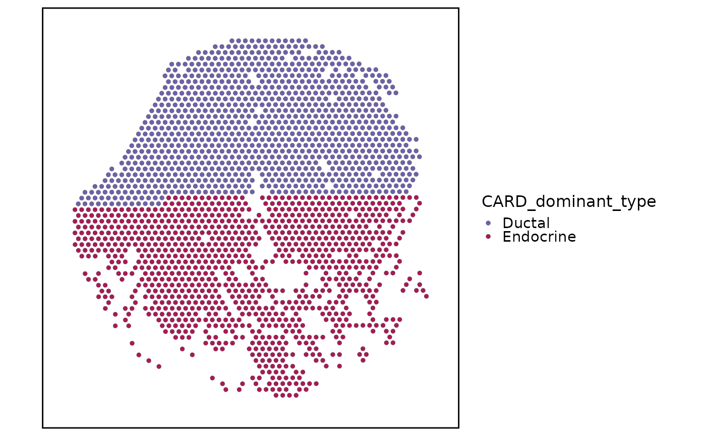
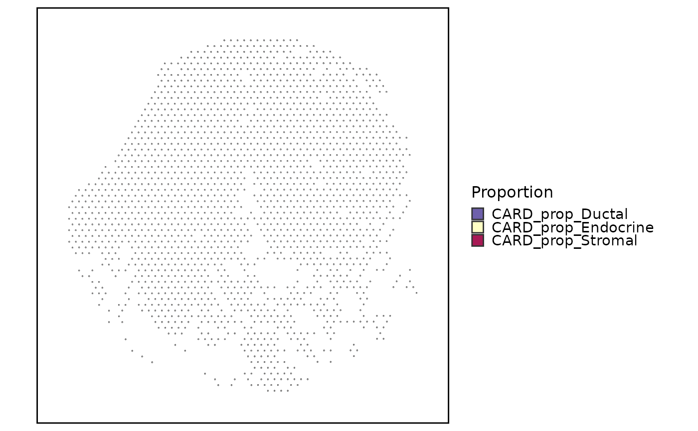

Estimate spot-level cell-type proportions from a spatial Seurat object
using a single-cell Seurat reference and the optional CARD/CARDspa
backend.
Usage
RunCARD(
srt,
reference,
reference_label,
assay = NULL,
reference_assay = NULL,
layer = "counts",
reference_layer = "counts",
features = NULL,
image = NULL,
coord.cols = c("col", "row"),
sample_varname = NULL,
minCountGene = 100,
minCountSpot = 5,
ct_select = NULL,
prefix = "CARD",
tool_name = "CARD",
store_results = TRUE,
round_counts = TRUE,
create_card_params = list(),
card_deconvolution_params = list(),
verbose = TRUE,
...
)Arguments
- srt
Spatial
Seuratobject used as the RCTD query.- reference
Reference
Seuratobject containing annotated single cells.- reference_label
Metadata column in
referencewith cell type labels.- assay
Assay used in
srt. IfNULL, the default assay is used.- reference_assay
Assay used in
reference.- layer, reference_layer
Assay layers used for spatial and reference raw counts.
- features
Features used for RCTD. If
NULL, shared features are used.- image
Name of the Seurat spatial image used to recover coordinates when
coord.colsare not available.- coord.cols
Metadata coordinate columns used when no image coordinate source is requested or available.
- sample_varname
Optional metadata column in
referencecontaining sample labels. WhenNULL, all reference cells are assigned to one sample.- minCountGene, minCountSpot
Filtering parameters passed to
CARD::createCARDObject()orCARDspa::createCARDObject()when supported.- ct_select
Optional cell types to keep in CARD.
- prefix
Prefix for metadata columns.
- tool_name
Name used to store detailed results in
srt@tools.- store_results
Whether to store detailed RCTD results in
srt@tools.- round_counts
Whether to round non-integer counts to the nearest integer before passing data to
spacexr. RCTD requires integer count matrices; this defaults toTRUEso bundled example data with scaled non-integer reference counts can run directly.- create_card_params
Additional parameters passed to
createCARDObject().- card_deconvolution_params
Additional parameters passed to
CARD_deconvolution().- verbose
Whether to print the message. Default is
TRUE.- ...
Additional parameters passed to the RCTD run step.
Value
A Seurat object with CARD proportion columns in metadata and
dominant cell type summaries. When store_results = TRUE, detailed results
are stored in srt@tools[[tool_name]].
Examples
data(visium_human_pancreas_sub)
spatial <- visium_human_pancreas_sub
card_weights <- data.frame(
CARD_prop_Ductal = seq(0.70, 0.20, length.out = ncol(spatial)),
CARD_prop_Endocrine = seq(0.20, 0.70, length.out = ncol(spatial)),
CARD_prop_Stromal = 0.10,
row.names = colnames(spatial)
)
card_weights <- card_weights / rowSums(card_weights)
spatial <- Seurat::AddMetaData(spatial, card_weights)
spatial$CARD_dominant_type <- sub(
"^CARD_prop_",
"",
colnames(card_weights)[max.col(card_weights)]
)
spatial$CARD_max_prop <- apply(card_weights, 1, max)
SpatialSpotPlot(
spatial,
group.by = "CARD_dominant_type",
overlay_image = FALSE,
coord.cols = c("x", "y")
)

if (requireNamespace("scatterpie", quietly = TRUE)) {
SpatialSpotPlot(
spatial,
group.by = "CARD_dominant_type",
plot_type = "pie",
overlay_image = FALSE,
coord.cols = c("x", "y")
)
}

if (
(isTRUE(check_r("CARD", verbose = FALSE)) ||
isTRUE(check_r("CARDspa", verbose = FALSE)))
) {
data(pancreas_sub)
features_use <- head(intersect(rownames(spatial), rownames(pancreas_sub)), 300)
spatial <- RunCARD(
spatial,
reference = pancreas_sub,
reference_label = "CellType",
assay = "Spatial",
reference_assay = "RNA",
features = features_use,
verbose = FALSE
)
}
#> Error in check_r("CARD", verbose = FALSE): could not find function "check_r"